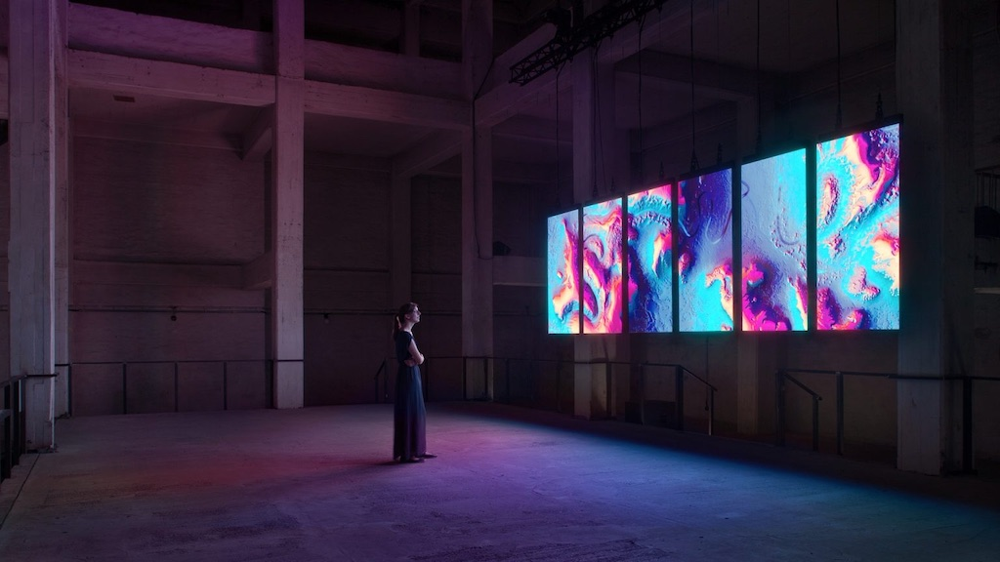
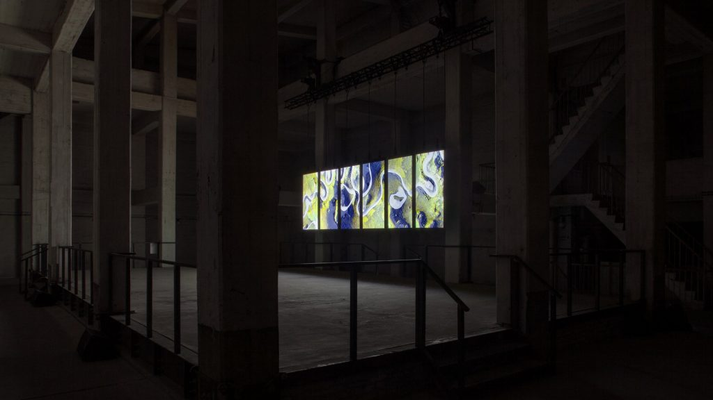
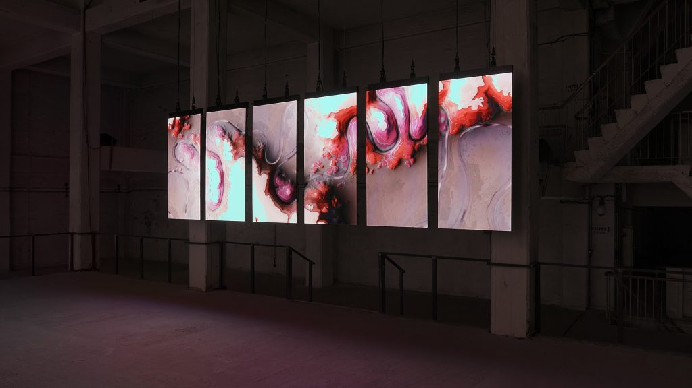
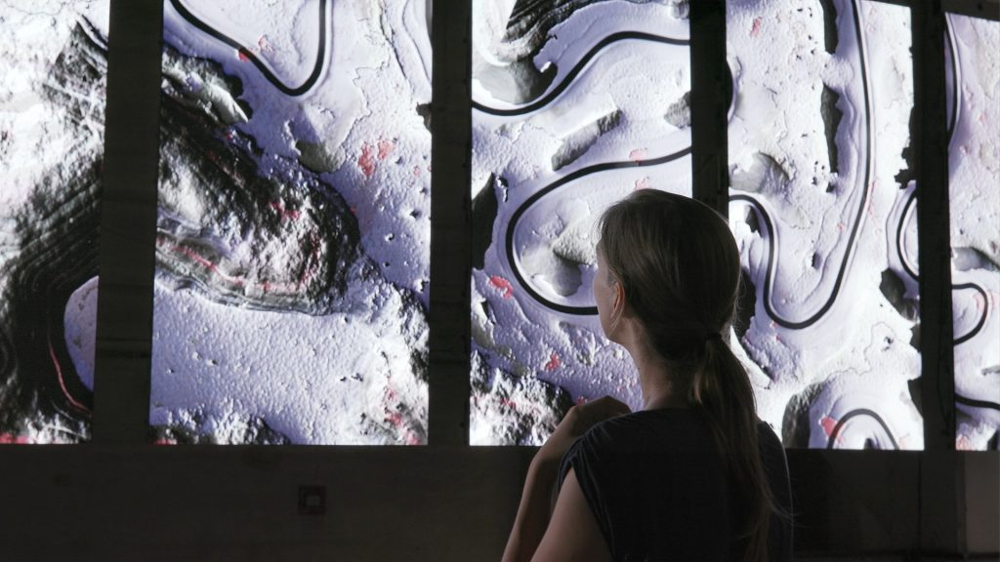

“Meandering River” is an audiovisual installation comprised of real-time visuals generated by an algorithm and music composed by an A.I.
Spanning over multiple screens, the piece reinterprets the shifting behaviors of rivers by visualizing and sonifying their impact on the surface of the earth.
Based on a bespoke algorithm, the rippling and oscillating movement of the generated imagery provides a new human perspective on space and time, in an attempt to decipher the unpredictable patterns of natural forces. As the evolving patterns of “Meandering River” emerge, the viewer is left with a humbling sense of the unpredictability of change and the beauty of nature.
At the time of the project I was working as a team member of onformative in the quality of Creative Producer. My role was to act as a catalyser between all the parties involved, from software development, visual design, sound design and logistics, in order to complete the work, produce the documentation video and deliver the opening exhibition at Funkhaus, Berlin on August 2018.



